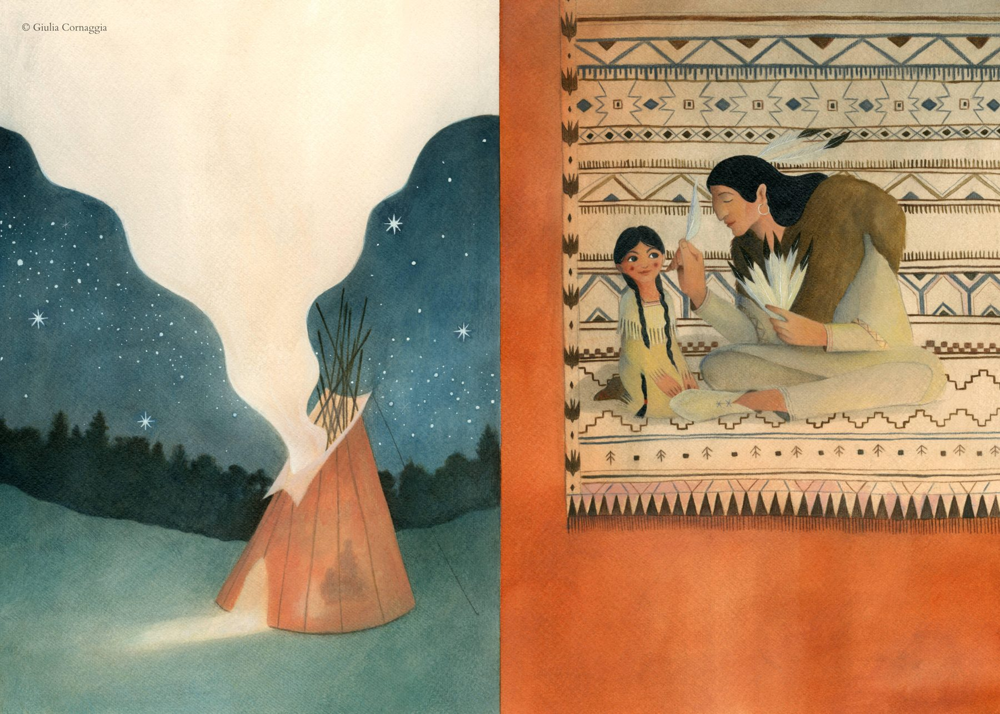
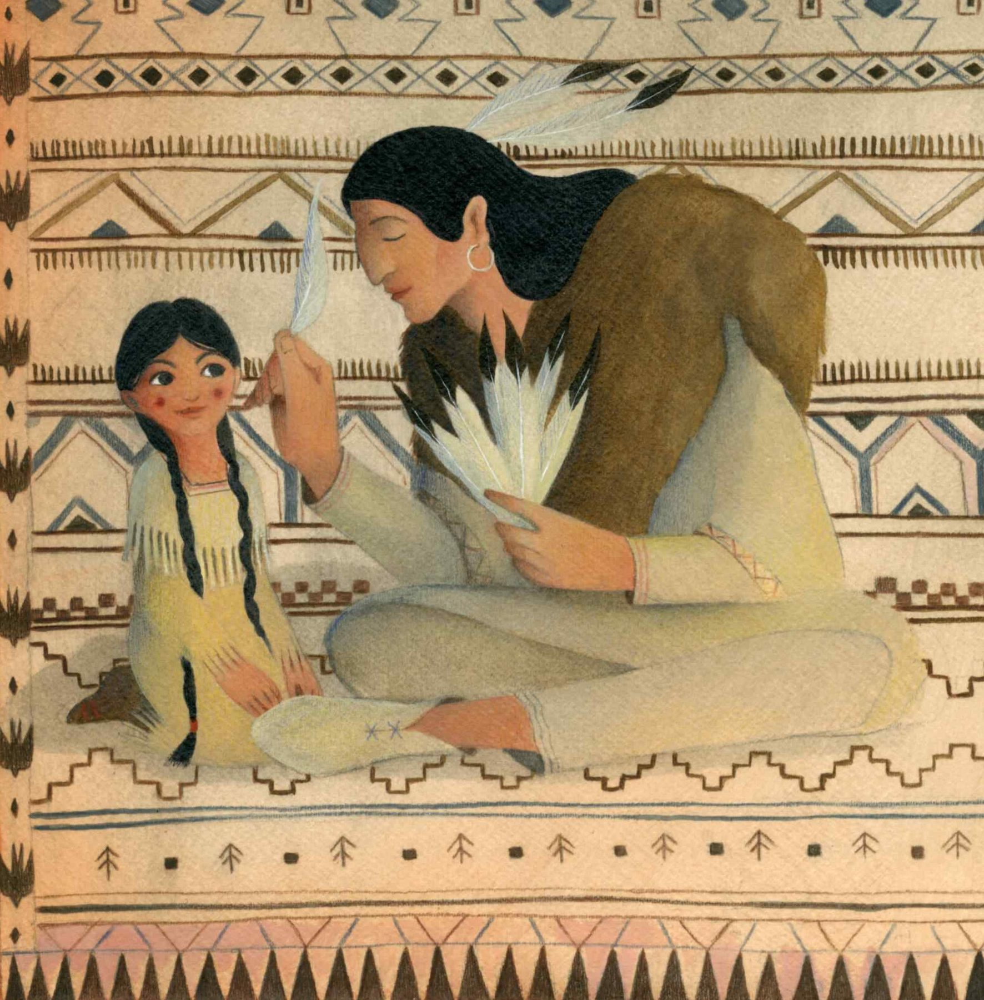
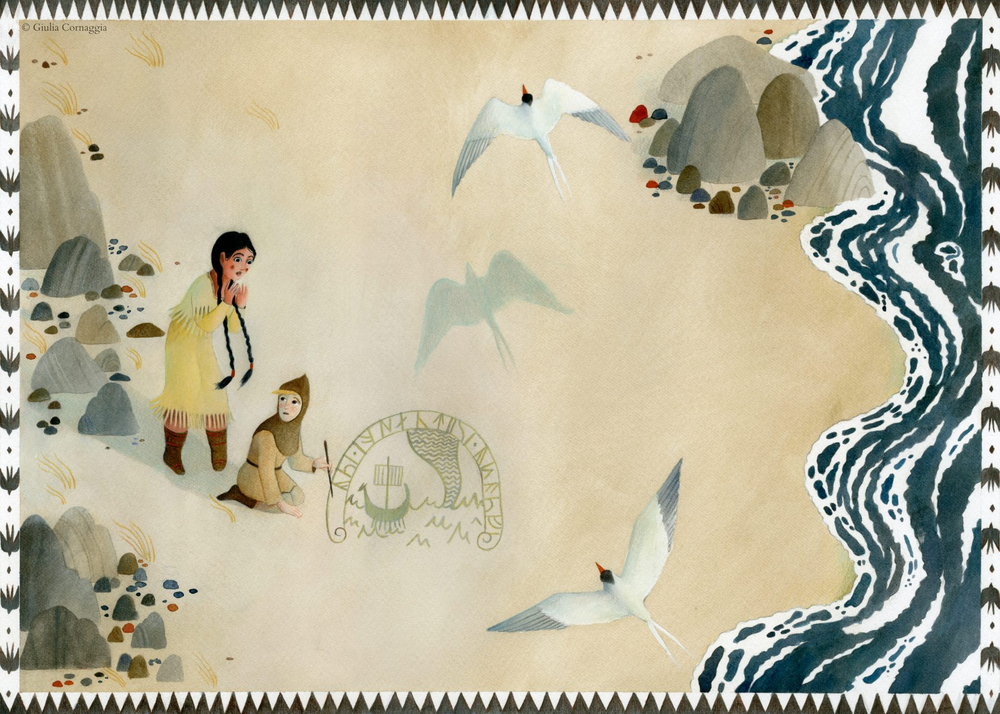

Serie di due illustrazioni create per il concorso "Notte di Fiaba" e selezionate ed esposte presso il MAG - Museo dell'Alto Garda. Il progetto si concentra sulla composizione, traendo ispirazione dai pattern e dai colori il più possibile naturali dei popoli indigeni del Nord America.

